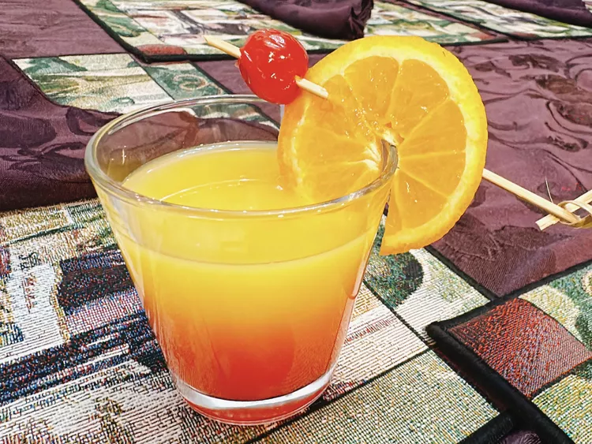

Limoncello-Sunrise
A few needed details to consider
- Preparation time: 5 mins or less
- Cooking time: 5 mins or less
- Serving per Preparation: 1
- Calories: 328g
- Protein: 1g
- Fat: 0g(maybe from the fish oil)
- Carbs: 57g
Final Product

Tiny Description
This gorgeous limoncello sunrise cocktail mimics the stunning colors(not artificial)often found in a sunrise.
Adding an orange slice and a maraschino cherry make it extra nice for a special occasion.
List of required ingredients
- 2 fluid ounces limoncello
- 4 fluid ounces orange juice
- 1 splash grenadine
- ice cubes (optional)
- 1 maraschino cherry (optional)
- 1 orange slice (optional)
Steps to be followed(simple to bring together)
-
Add ice cubes to an Old Fashioned glass. Pour in limoncello and orange juice.
-
Slowly pour in grenadine from a squeeze bottle (It will sink to the bottom of the glass).
-
Garnish with an orange slice and a maraschino cherry. Serve immediately.
-
If you chill the ingredients, you will not need ice cubes.